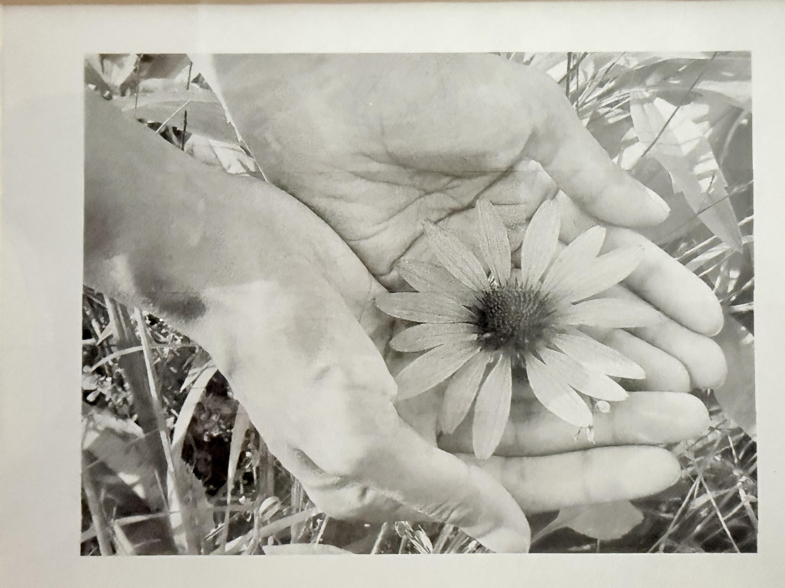
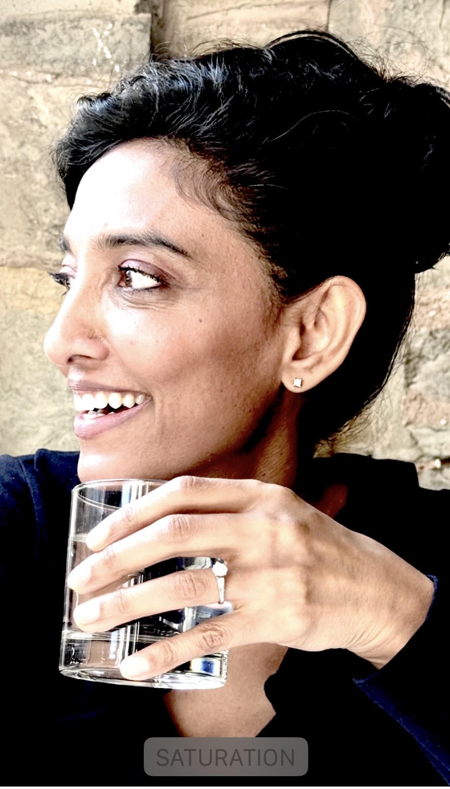

Registered Physiotherapist · Osteopathic Manual Practitioner
Care that meets
the whole person.
Rada Thomas brings more than two decades of physiotherapy and osteopathic practice to patients of all ages across Hamilton and Burlington — grounded in curiosity, precision, and a deep respect for the body's capacity to heal.
Meet Rada
About
Rada Thomas
P.T., D.O.M.P., DSc.O
Registered Physiotherapist
Osteopathic Manual Practitioner
Professor, Faculty of Applied Health & Community Studies, Sheridan College
Rada is dedicated to delivering the highest level of care to patients of all ages. Her approach is shaped by rigorous clinical training, a lifelong love of learning, and a belief that healing is as much a human experience as a physical one.
Rada was introduced to osteopathy as a patient, and the experience had such a profound effect that she decided to pursue it as a career — a turn that continues to define the way she practices today.
The Path
A journey shaped by science, sport, and story.
-
McMaster University
Rada began her post-secondary education at McMaster, completing a Bachelor of Science in Biology and Psychology. Over four years she competed on the Varsity Women's Tennis team, finishing her career as co-captain and receiving the Marauder's Scholar award.
-
University of Toronto — Faculty of Medicine
She went on to study Physical Therapy at the University of Toronto. Her clinical placements spanned cardiorespiratory, orthopaedic, and neurological care at Mount Sinai Hospital (two terms), Toronto East General Hospital, Toronto Western Hospital, and the Toronto Rehab Institute.
-
Early Physiotherapy Practice
Rada began her career at Toronto East General in outpatient orthopaedics and the intensive care and surgical wards. She has since gained extensive experience in multidisciplinary private clinics across Toronto, Hamilton, and Dundas.
-
Canadian College of Osteopathy
Rada completed her osteopathic diploma at the Canadian College of Osteopathy (Toronto Campus). She graduated as valedictorian and received the Melanie Berger research scholarship, the Sarah Forsyth award for high achievement in academics, and the William Garner Sutherland award for her thesis.
-
Research & Narrative Inquiry
Her thesis — Healing and Becoming: An Autobiographical Narrative Inquiry into the Lived Experiences of One Osteopathic Student — was inspired by the care and guidance received by Glenn Sprague, BSc. Bio, BSc. PT, D.O.M.P., and continued to grow out of a master's-level course taught by Dr. Jean Clandinin, co-founder of the Narrative Inquiry methodology, who went on to mentor Rada through the work. Her thesis was supervised by David Murray, MSc.(Kin), CAT(C), R.Kin, D.O.M.P., DSc.O.
Today
Practice & teaching
Clinical Practice
Rada is dedicated to her two current clinical practices in Hamilton and Burlington, caring for patients of all ages through combined physiotherapy and osteopathic manual practice.
Teaching
Passionate about sharing all that she has learned, Rada is a part-time Professor with Sheridan College's Faculty of Applied Health & Community Studies.
Get in touch
Book a visit or ask a question.
Rada welcomes new and returning patients across her Hamilton and Burlington practices. Reach out to learn more or to arrange an appointment.
Contact Rada